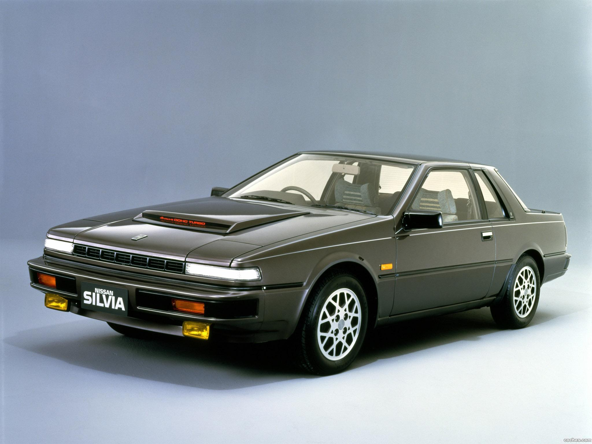

 |
AÑO DE LANZAMIENTO: 1983. MOTOR: 2.0 litros turbocompresor. POTENCIA: 190cv. VELOCIDAD MÁXIMA: 205 km/h ACELERACIÓN 0 A 100 KM/H: 9,60 seg. El S12 se fabricó entre 1983 y 1989, con modificaciones exteriores en 1986 (denominadas «Mk. II»). Se vendió en dos versiones, una cupé (a veces llamada «notchback» por su perfil lateral) y una compacta.En él se desarrollaron tecnologías inéditas, como sensor de lluvia, comando por voz y pantalla en el parabrisas. |